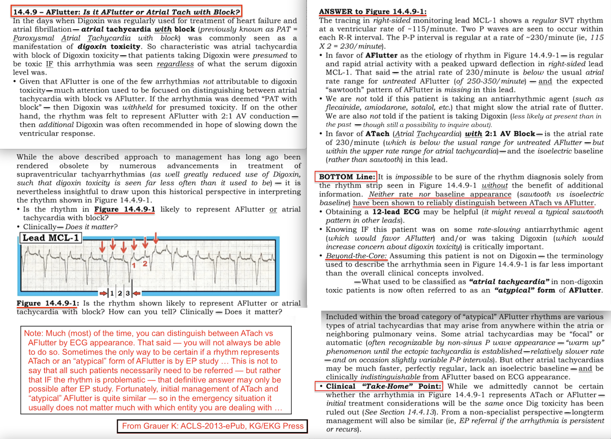
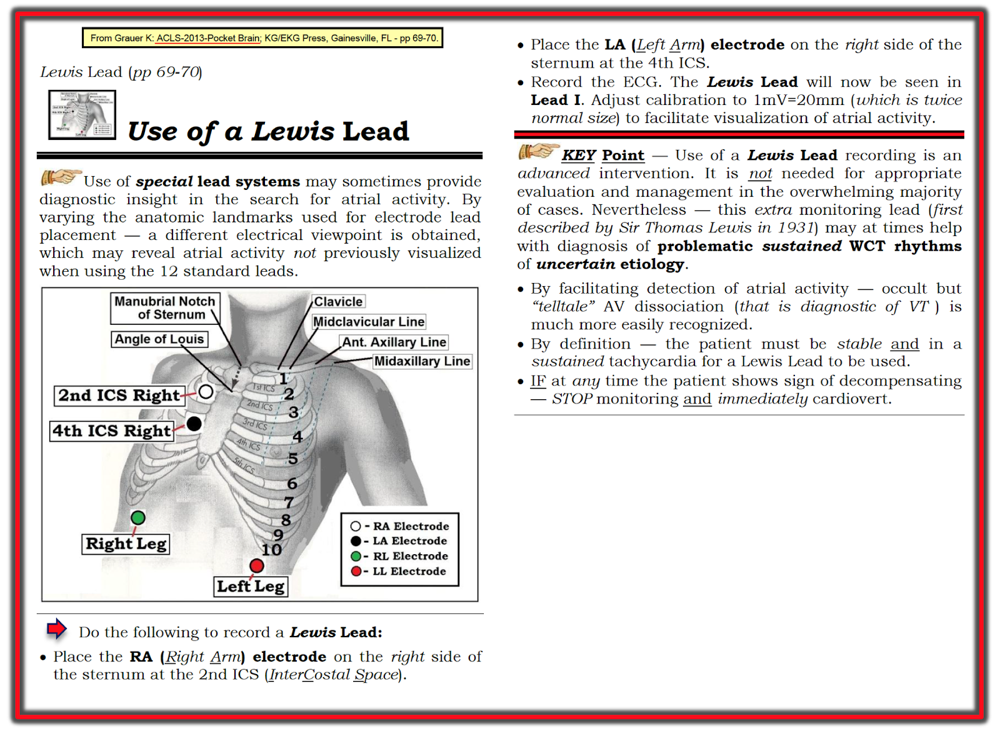

ECG Blog #287 — Nhịp nhanh xoang kèm ST chênh xuống?
Điện tâm đồ trong Hình-1 được ghi ở một người đàn ông ngoài 50 tuổi trong lúc chạy thận nhân tạo. Ông than "đau ngực" — nhưng huyết động ổn định vào thời điểm ghi bản ghi này.
- Đây có phải là Nhịp nhanh xoang kèm ST chênh xuống do thiếu máu cục bộ?
- Có nên kích hoạt phòng thông tim (cath lab)?
=======================================
Cách tiếp cận của tôi với ca hôm nay:
Vì bệnh nhân có ổn định huyết động — nên có thời gian để đánh giá nhịp một cách hệ thống. Theo Cách tiếp cận Ps, Qs, 3R (Xem ECG Blog #185):
- Nhịp nhanh và đều (Regular). Vì khoảng R-R chỉ dài hơn 2 ô lớn một chút — tôi ước tính tần số (Rate) thất chỉ dưới 150/phút.
- QRS hẹp (tức là rõ ràng không dài quá nửa ô lớn) — nghĩa là nhịp có nguồn gốc trên thất.
- Sóng P xoang có vẻ vắng mặt — vì chúng ta không thấy sóng P dương rõ nét ở chuyển đạo II. Có thể sóng P bị ẩn trong phần có vẻ là phần dương cuối của sóng T ở chuyển đạo II — nhưng điều này còn lâu mới chắc chắn. Trong những ca như thế này, cho đến khi chứng minh được sự hiện diện rõ ràng của các sóng P rõ nét — chúng ta phải giả định rằng không có sóng P xoang.
- Liệu có bằng chứng của một dạng hoạt động nhĩ khác không? (Có thể — Xem bên dưới).
- Khi không có sóng P rõ nét — Thông số thứ 5 trong Cách tiếp cận hệ thống của chúng tôi (tức là Xác định XEM sóng P có liên quan (Related) với các phức bộ QRS kế cận không?) là âm tính.
NHẬN ĐỊNH của TÔI về nhịp:
Theo Cách tiếp cận Ps, Qs, 3R — Chúng ta đã xác định rằng nhịp trong Hình-1 là một SVT (nhịp nhanh trên thất — SupraVentricular Tachycardia) đều với tần số chỉ dưới 150/phút — nhưng không có dấu hiệu rõ ràng của sóng P xoang.
ĐIỂM THEN CHỐT (PEARL) #1: Việc nhận ra rằng nhịp trong Hình-1 là một SVT đều không có dấu hiệu rõ ràng của sóng P xoang (tức là không có sóng P dương chắc chắn ở chuyển đạo II) — cần khiến ta nghĩ tới DANH SÁCH chẩn đoán phân biệt sau đây:
- i) Nhịp nhanh xoang (NẾU có khả năng sóng P xoang đang ẩn trong sóng ST-T đi trước);
- ii) Một SVT vào lại (hoặc là AVNRT nếu vòng vào lại nằm gọn trong nút AV — hoặc AVRT nếu có sự tham gia của một AP [Accessory Pathway — đường phụ] nằm ngoài nút AV);
- iii) Nhịp nhanh nhĩ (ATach);
- iv) Cuồng nhĩ (AFlutter) với dẫn truyền AV 2:1.
Điểm MẤU CHỐT: Mặc dù các thực thể khác cũng có thể gây ra SVT đều (tức là nhịp nhanh vào lại nút xoang nhĩ, nhịp nhanh bộ nối) — những thực thể khác này ít gặp hơn nhiều trong thực hành. Vì vậy, nhớ nghĩ tới 4 thực thể trong DANH SÁCH trên bất cứ khi nào bạn gặp một nhịp SVT đều không có dấu hiệu rõ ràng của sóng P xoang — sẽ giúp rất nhiều trong việc xác định chẩn đoán đúng.
- LƯU Ý: Để biết thêm về các nguyên nhân gây nhịp SVT đều (không có dấu hiệu rõ ràng của hoạt động nhĩ bình thường) — Xem Audio Pearl (MP-64) của chúng tôi ở cuối trang này trong phần Bổ sung (Addendum).
ĐIỂM THEN CHỐT (PEARL) #2: Tần số tim có thể giúp gì trong chẩn đoán SVT:
- Nhịp nhanh xoang thường không vượt quá 160-170/phút ở một người lớn "đang nằm" (tức là ở bệnh nhân bạn đang khám, người không vừa mới chạy bộ). Điều này không có nghĩa là nhịp nhanh xoang sẽ không bao giờ nhanh hơn 170/phút — mà là muốn gợi ý rằng khi tần số của nhịp SVT đều mà bạn đang đánh giá vượt xa khoảng tần số này — thì nhịp đó có lẽ không phải là nhịp nhanh xoang. LƯU Ý: Ở trẻ em thì mọi quy tắc đều không áp dụng — vì ở trẻ em, nhịp nhanh xoang trên 200/phút không hiếm gặp đến thế.
- Với AFlutter — đáp ứng thất thường gặp nhất ở bệnh nhân không được điều trị bằng thuốc chống loạn nhịp là ~150/phút (khoảng thường gặp ~140-160/phút). Đó là vì tần số nhĩ trong AFlutter chưa điều trị thường là ~300/phút (khoảng thường gặp ~250-350/phút) — và vì AFlutter chưa điều trị thường biểu hiện với dẫn truyền AV 2:1 — 300/2 ~150/phút. Do đó — NẾU tần số thất của nhịp SVT đều mà bạn đang đánh giá trên ~170-180/phút — thì ít khả năng là AFlutter hơn, vì tần số này sẽ nhanh-hơn-dự-kiến đối với dẫn truyền AV 2:1, và quá chậm đối với dẫn truyền AV 1:1.
- LƯU Ý: Khoảng tần số ~140-160/phút này là dành cho AFlutter chưa điều trị. Bệnh nhân đã dùng thuốc chống loạn nhịp có thể biểu hiện cuồng nhĩ với tần số nhĩ chậm hơn (và do đó đáp ứng thất chậm hơn).
- Cũng nên nhớ rằng ATach là nguyên nhân ít gặp hơn của một nhịp SVT đều tuyệt đối, đặc biệt ở người lớn trẻ đến trung niên vốn khỏe mạnh. ATach dễ gặp hơn ở bệnh nhân được chuyển đến làm EP (thăm dò điện sinh lý — ElectroPhysiologic testing) — và ở người lớn tuổi có SSS (hội chứng suy nút xoang — Sick Sinus Syndrome). Tôi đưa ATach vào DANH SÁCH chẩn đoán phân biệt ở trên cho đầy đủ — nhưng cần lưu ý rằng nó sẽ không gặp thường xuyên như AFlutter và các SVT vào lại.
- Vì vậy — NẾU tần số của một SVT đều không có dấu hiệu rõ ràng của sóng P xoang nhanh hơn đáng kể so với 160-170/phút — thì nhịp SVT vào lại (tức là AVNRT hoặc AVRT) trở thành chẩn đoán có khả năng nhất. Tuy nhiên, NẾU tần số của SVT đều gần với 150/phút (tức là 140-160/phút) — thì bất kỳ thực thể nào trong 4 thực thể chẩn đoán của DANH SÁCH trên đều có thể hiện diện ( = Nhịp nhanh xoang — AVNRT — AVRT — ATach — AFlutter). Đây là tình huống trong ca hôm nay — vì tần số của nhịp SVT đều trong Hình-1 rất gần với 150/phút.
ĐIỂM THEN CHỐT (PEARL) #3: Theo kinh nghiệm của tôi — rối loạn nhịp hay bị bỏ sót nhất, cho đến nay (vượt xa các loại khác!), là AFlutter. Lý do — là vì hoạt động nhĩ của AFlutter thường bị ẩn một phần hoặc hoàn toàn trong phức bộ QRS hoặc sóng ST-T.
- Do đó — cách TỐT NHẤT để tránh bỏ sót chẩn đoán AFlutter là luôn luôn Nghi ngờ AFlutter với dẫn truyền AV 2:1 bất cứ khi nào bạn gặp một nhịp SVT đều với tần số gần 150/phút, trong đó sóng P xoang không hiện rõ.
- NẾU bạn nghi ngờ AFlutter trong tình huống này cho đến khi chứng minh được điều ngược lại — thì bạn sẽ không bỏ sót chẩn đoán. Sau đó có nhiều cách để bạn chứng minh (hoặc bác bỏ) nghi ngờ của mình. Các cách này gồm làm chậm tạm thời đáp ứng thất bằng nghiệm pháp Valsalva — bằng Valsalva "hóa học" (tức là dùng Adenosine hoặc thuốc làm chậm nút AV khác để xem việc giảm tần số thất có làm lộ ra hoạt động cuồng nhĩ nền hay không) — và/hoặc bằng cách dùng một hệ thống chuyển đạo đặc biệt, như chuyển đạo Lewis có thể giúp dễ nhìn thấy hoạt động nhĩ (Xem Hình-4 bên dưới trong phần Bổ sung ở cuối trang).
ĐIỂM THEN CHỐT (PEARL) #4: Phương pháp tôi ưu tiên thử trước tiên — đơn giản là TÌM sóng cuồng nhĩ! Chẩn đoán AFlutter có thể được xác lập ở một SVT đều ~150/phút — NẾU bạn nhận ra được hoạt động nhĩ đều ở tần số ~300/phút. Không có gì khác tạo ra hoạt động nhĩ đều ở tần số nhanh như vậy (Nhịp nhanh nhĩ hiếm khi nhanh hơn 250/phút ...).
- Cách tôi tìm sóng cuồng nhĩ là cẩn thận đặt compa đo (calipers) ở chính xác MỘT NỬA khoảng R-R của SVT đều (vì NẾU nhịp là AFlutter — thì tần số nhĩ phải gấp đôi tần số thất nếu có dẫn truyền AV 2:1). Các vạch ĐỎ ngắn ở chuyển đạo II và aVF của Hình-2 xác nhận rằng quả thật có hoạt động nhĩ 2:1 trên bản ghi này — điều đó cho chúng ta biết, ngay cả trước khi làm nghiệm pháp cường phế vị hoặc dùng Adenosine (hoặc thuốc ức chế nút AV khác), rằng nhịp này gần như chắc chắn là AFlutter.
- ĐIỂM THEN CHỐT (PEARL) #5: Các chuyển đạo "ƯU TIÊN" ("GO TO") quen dùng của tôi để nhận diện hoạt động nhĩ là i) Chuyển đạo II — thường là chuyển đạo TỐT NHẤT để nhận diện hoạt động nhĩ. Trong AFlutter — các chuyển đạo III và aVF cũng thường cho thấy ngay bằng chứng hoạt động nhĩ 2:1; ii) Chuyển đạo V1 — Sau chuyển đạo II, theo kinh nghiệm của tôi chuyển đạo V1 thường là chuyển đạo tốt thứ 2 để nhận diện hoạt động nhĩ. Với AFlutter — ta thường thấy các sóng dương biên độ nhỏ của AFlutter ở chuyển đạo V1 này; iii) Chuyển đạo aVR thường giúp ích bất ngờ trong việc nhận diện hoạt động nhĩ; và, iv) NẾU không chuyển đạo nào ở trên gợi ý hoạt động nhĩ — thì tôi sẽ rà soát 7 chuyển đạo còn lại để tìm hoạt động nhĩ. Dù vậy, AFlutter gần như luôn cho thấy ngay bằng chứng hoạt động nhĩ ở một hoặc nhiều chuyển đạo “Ưu tiên” của tôi.
- Lý do chẩn đoán AFlutter rất khó nhận ra trong ca hôm nay — là vì ngoại trừ chuyển đạo II và aVF, sóng cuồng nhĩ ở các chuyển đạo khác gần như ẩn hoàn toàn trong phức bộ QRS!
KẾT LUẬN của ca:
Nguyên nhân của SVT đều ~150/phút trong ca hôm nay là AFlutter với dẫn truyền AV 2:1. Lý do gây sóng ST-T đảo ngược "giả" là sự chồng lên của hoạt động cuồng nhĩ "hình răng cưa" nổi bật suốt chu chuyển tim.
- Xem phần còn lại của điện tâm đồ — có trục hơi lệch phải (sóng S lớn hơn sóng R ở chuyển đạo I) — và có lẽ có LVH (sóng S rất sâu ở các chuyển đạo trước tim V2, V3) — nhưng có lẽ không có thay đổi ST-T cấp tính một khi đã tính đến các sóng cuồng nhĩ nổi bật.
- Điều trị ban đầu TỐT NHẤT cho cảm giác khó chịu ở ngực của bệnh nhân này là làm chậm đáp ứng thất (và lý tưởng là chuyển nhịp). Sau đó ghi lại điện tâm đồ để bảo đảm không có thay đổi cấp tính nào khi nhịp xoang đã được phục hồi.
=======================
Lời cảm ơn: Xin cảm ơn Mohd Hatif Kamail (từ Kota Bharu, Malaysia) đã cung cấp ca bệnh và bản ghi này.
=======================
=============================
Các LIÊN KẾT liên quan đến Ca hôm nay:
=============================
Tài liệu bổ sung liên quan đến Ca hôm nay:
- Xem ECG Blog #185 — để ôn lại Cách tiếp cận Ps, Qs, 3R Hệ thống trong đọc nhịp.
- Xem ECG Blog #240 — để Ôn lại cách đánh giá điện tâm đồ ở bệnh nhân có nhịp SVT đều (bao gồm phân biệt giữa các loại SVT vào lại khác nhau).
- Xem ECG Blog #250 — để Ôn lại một ca khác về SVT đều kèm ST chênh xuống.
- ECG Blog #210 — ôn lại Phương pháp Cách-Một-Nhát (Every-Other-Beat Method) để ước tính nhanh tần số tim (Xem Video Pearl #27 trong bài này).
- ECG Blog #220 — ôn lại DANH SÁCH #1: Các nguyên nhân gây WCT đều và — CÁCH đánh giá sự ổn định huyết động (Nghe Audio Pearl #37 trong bài này).
- ECG Blog #229 — ôn lại cách phân biệt AFlutter với ATach (và TẠI SAO AFlutter hay bị bỏ sót đến vậy).
- Bài đăng ngày 12 tháng 11 năm 2019 trên Dr. Smith's ECG Blog — trong đó tôi trình bày cách tiếp cận của tôi với nhịp SVT đều.
===================================
PHẦN BỔ SUNG (ngày 27 tháng 2 năm 2022):
Tôi đã trình bày tài liệu này trước đây — nhưng nó đáng được nhắc lại để tham khảo. Những khái niệm này cần trở thành phản xạ tự động khi đánh giá bệnh nhân đến khám với nhịp SVT đều.


ECG Media PEARL #64 (10:50 phút Audio) hôm nay — Ôn lại DANH SÁCH #2: Các nguyên nhân thường gặp gây Nhịp SVT đều của tôi.
===================================

ECG Media PEARL #45 (10:00 phút Audio) hôm nay — Tại sao Cuồng nhĩ hay bị bỏ sót đến vậy? Ôn lại các ĐIỂM THEN CHỐT (PEARLS) về chẩn đoán AFlutter trên điện tâm đồ — và — Có gì "Mới"? trong lĩnh vực này, liên quan đến phân biệt giữa AFlutter với Nhịp nhanh nhĩ (29/5/2021).
- Với những ai muốn có một bài tổng quan chuyên sâu về một số khái niệm mới hơn liên quan đến AFlutter — Hãy xem bài báo này của García-Cosío F và cs. (Clinical Approach to ATach and AFlutter, Rev Esp Cardiol 65(4):363-375, 2012).
- Cosio ( Arrhythm & Electrophys Rev 6(2):55-62, 2017).
- Để biết thêm về phân biệt giữa AFlutter với ATach — Hãy xem Hình-3 bên dưới.




===================================